Rallen.
Elegância para se expressar.
Confiança para ser.

Moda que aproxima
estilo e autoestima.
A Rallen Store é uma marca de moda feminina que reúne roupas e acessórios para diferentes momentos da vida. Sua proposta combina uma curadoria cuidadosa com atendimento próximo, para que cada mulher encontre peças com as quais se identifique.
A identidade visual traduz essa relação entre elegância e confiança. O projeto dá forma a uma marca que valoriza a autenticidade, o cuidado nos detalhes e a liberdade de expressar a própria personalidade ao se vestir.
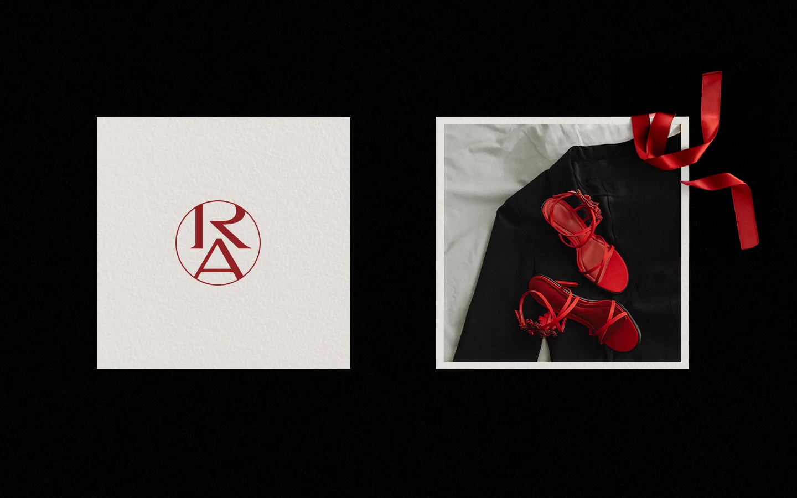
Uma presença marcante,
com atenção aos detalhes.
A proposta visual aproxima referências clássicas de uma comunicação atual. O contraste entre áreas claras, preto e vermelho profundo constrói uma identidade que pode ser discreta em uma etiqueta e expressiva em uma campanha.
O vermelho é o ponto de reconhecimento da paleta. Ao lado do tom claro e das versões em preto e branco, ele cria continuidade entre os materiais da marca, preservando espaço para as fotografias e os produtos.
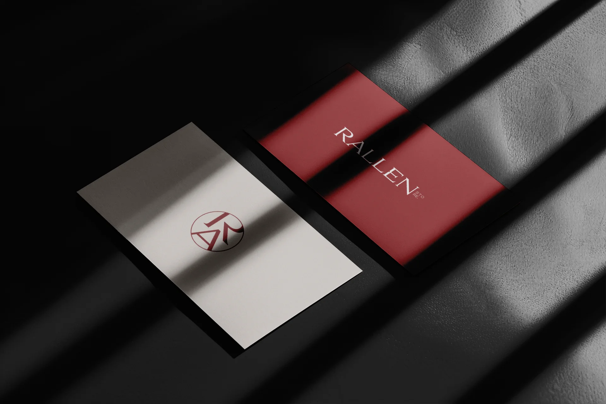
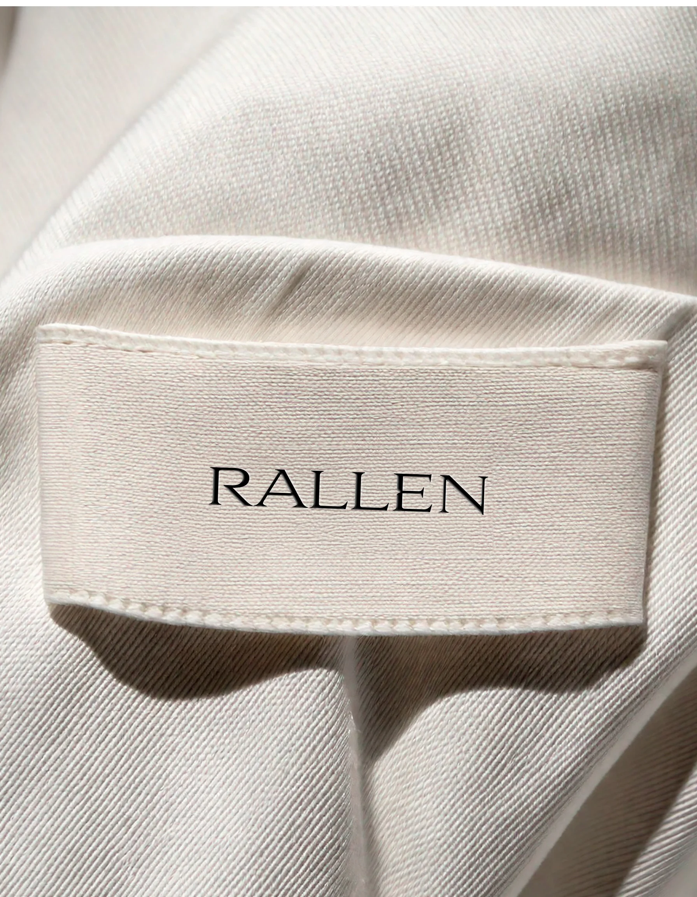
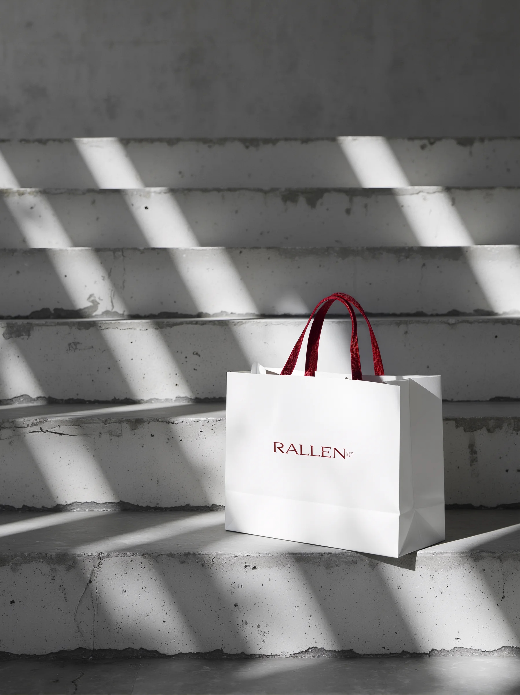
Uma assinatura.
Diferentes possibilidades.
O nome Rallen aparece em uma assinatura tipográfica serifada. O monograma reúne as letras R e A dentro de um círculo e oferece uma expressão compacta da marca para aplicações em que o nome completo não precisa ocupar o centro da composição.
O manual organiza versões do logotipo, cores, tipografias e orientações de uso. As famílias Cormorant Garamond e Noah compõem o repertório tipográfico, conectando o caráter clássico das serifas à clareza dos textos de apoio.
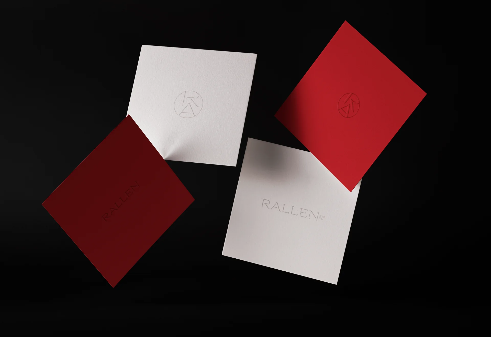
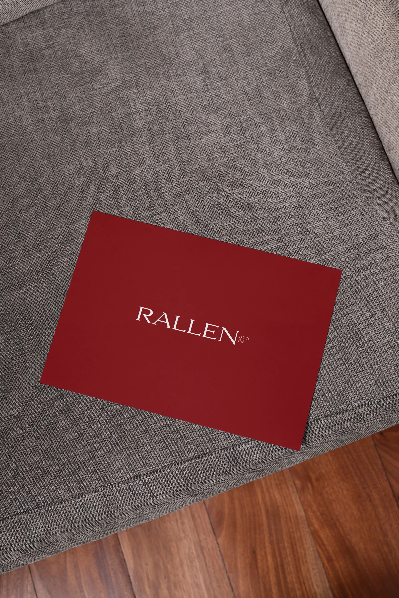
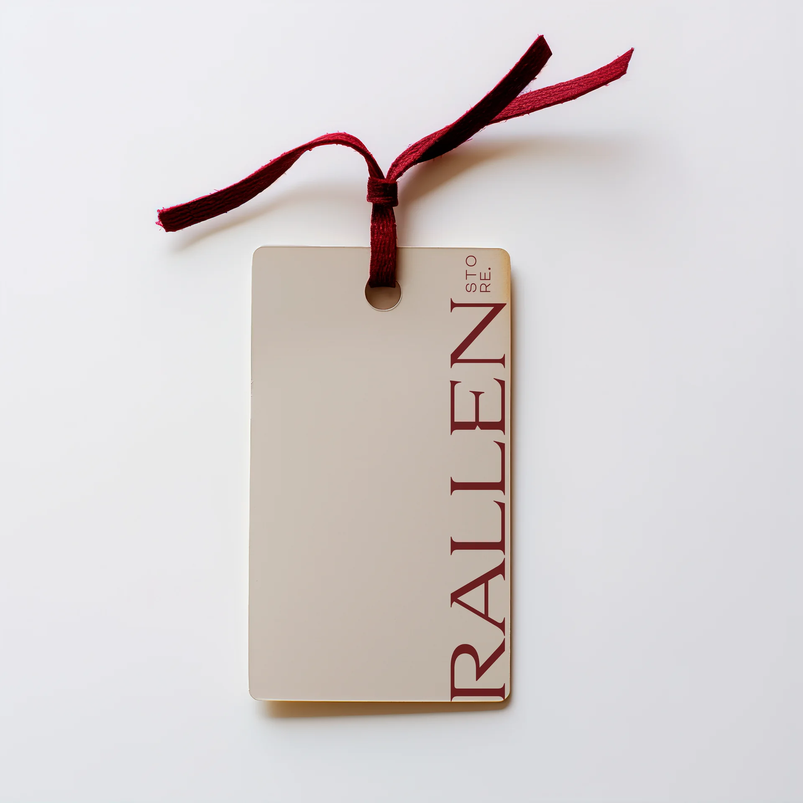
Cuidado que acompanha
a experiência de compra.
Nas sacolas, caixas e etiquetas, a identidade se adapta à escala e ao material. A assinatura pode aparecer centralizada ou ocupar uma lateral; o monograma funciona como um detalhe de reconhecimento.
Os mockups mostram essas possibilidades em papel, tecido e embalagens, aproximando o sistema visual da experiência de escolher, receber e vestir uma peça Rallen.
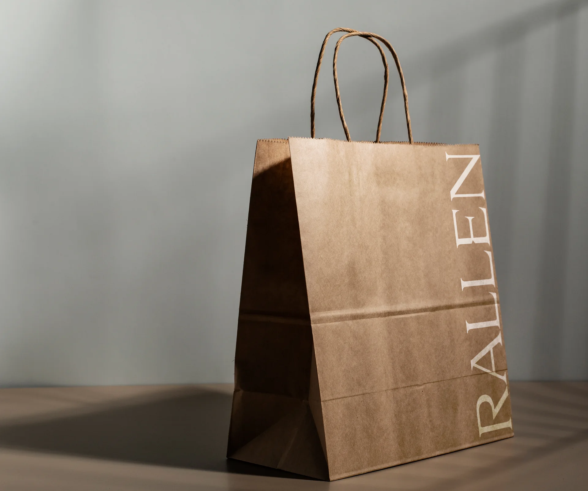
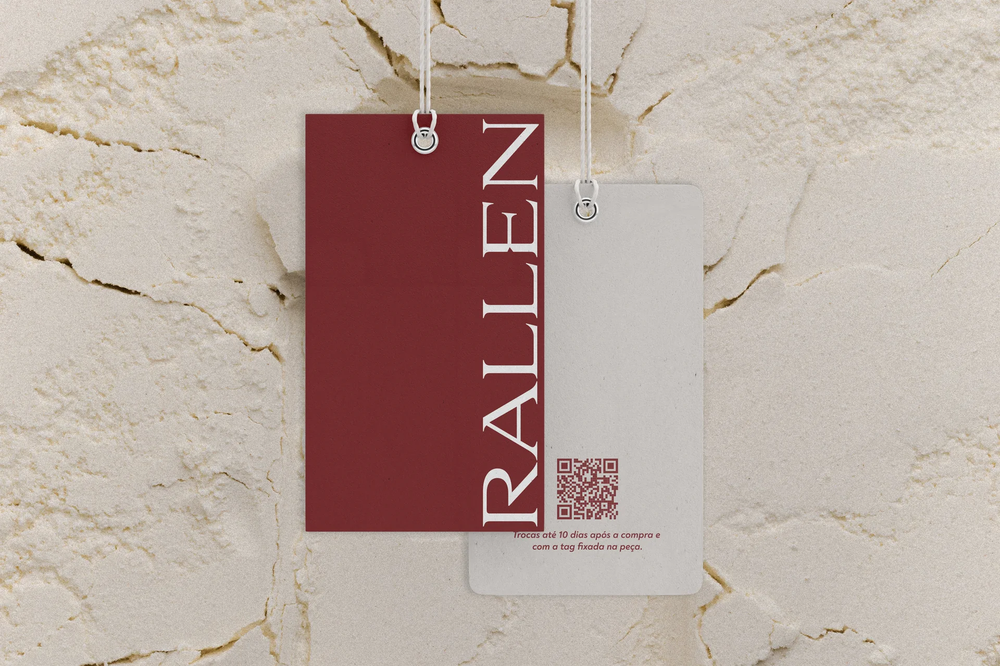
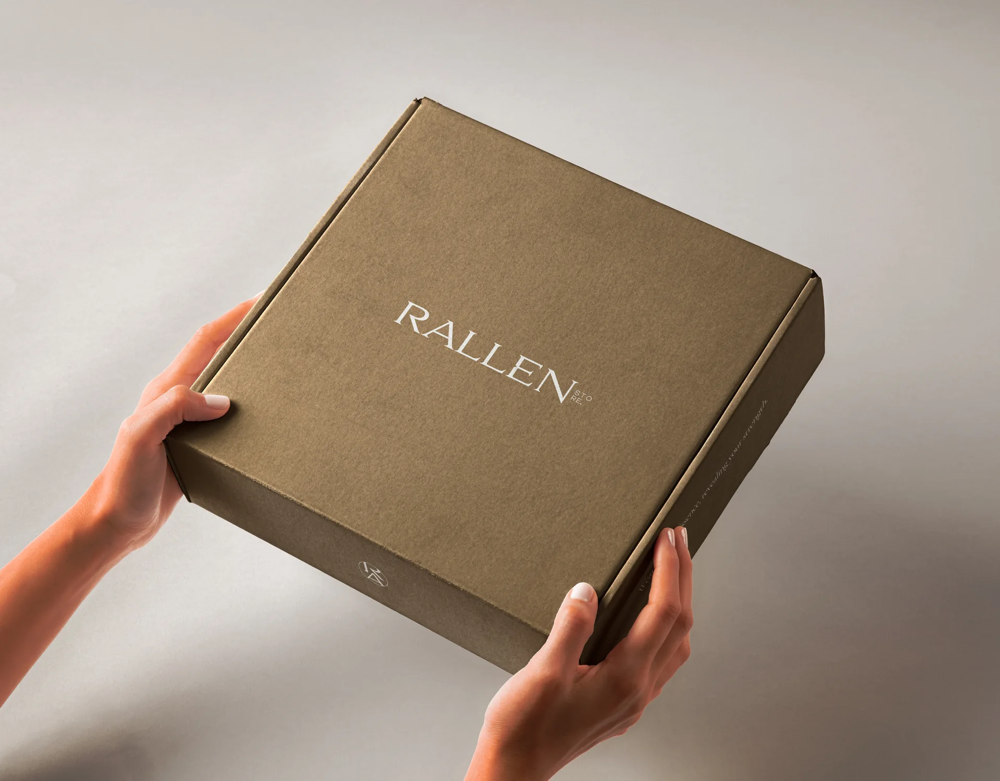
A mesma personalidade,
em diferentes formatos.
Nos layouts de redes sociais e nas simulações de campanha, fotografias de moda convivem com composições tipográficas e espaços de respiro. Vermelho, branco e preto conectam as peças e mantêm a presença da marca.
O resultado é um conjunto visual que expressa a proposta da Rallen: valorizar a autoestima feminina por meio da moda, com elegância, autenticidade e atenção à experiência de cada cliente.
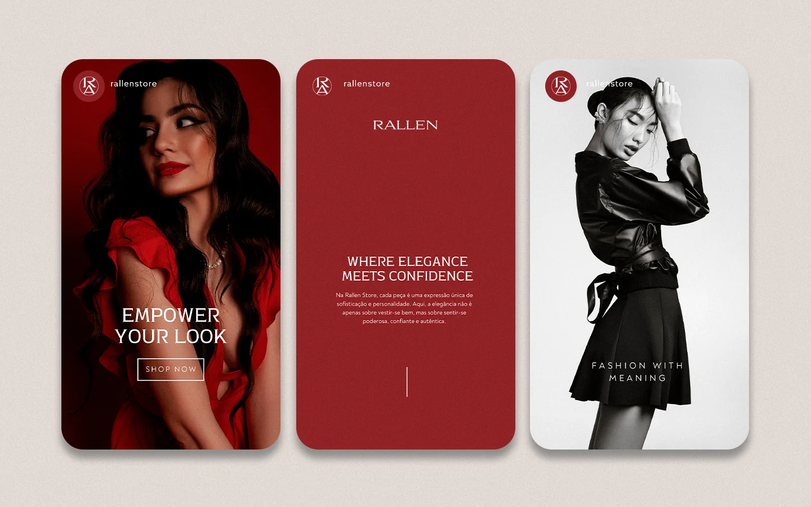
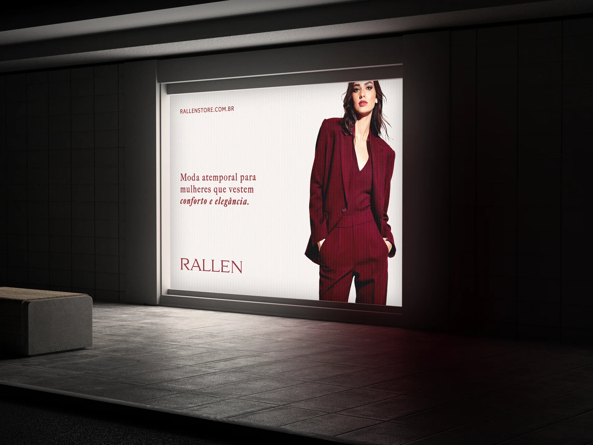